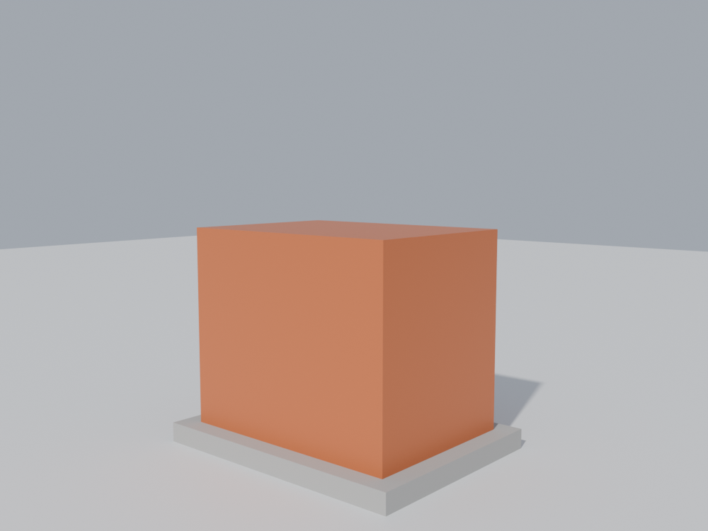
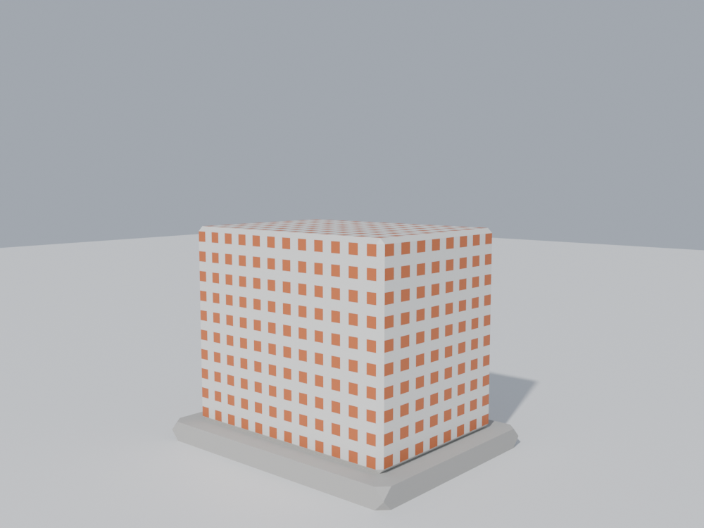
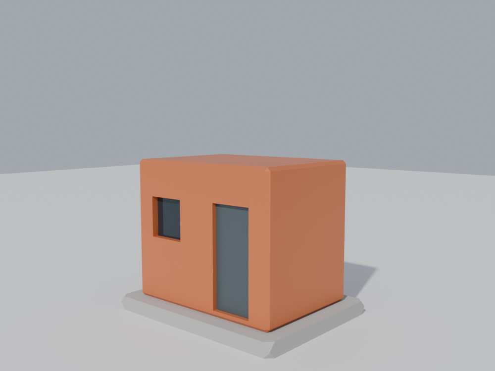
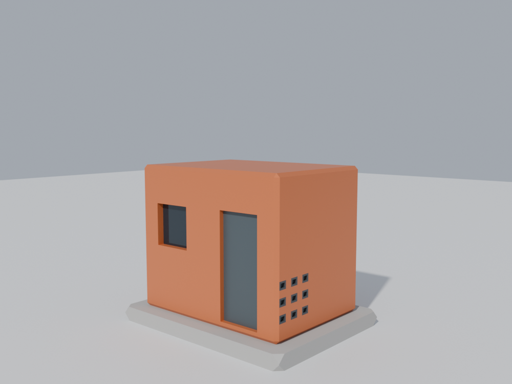
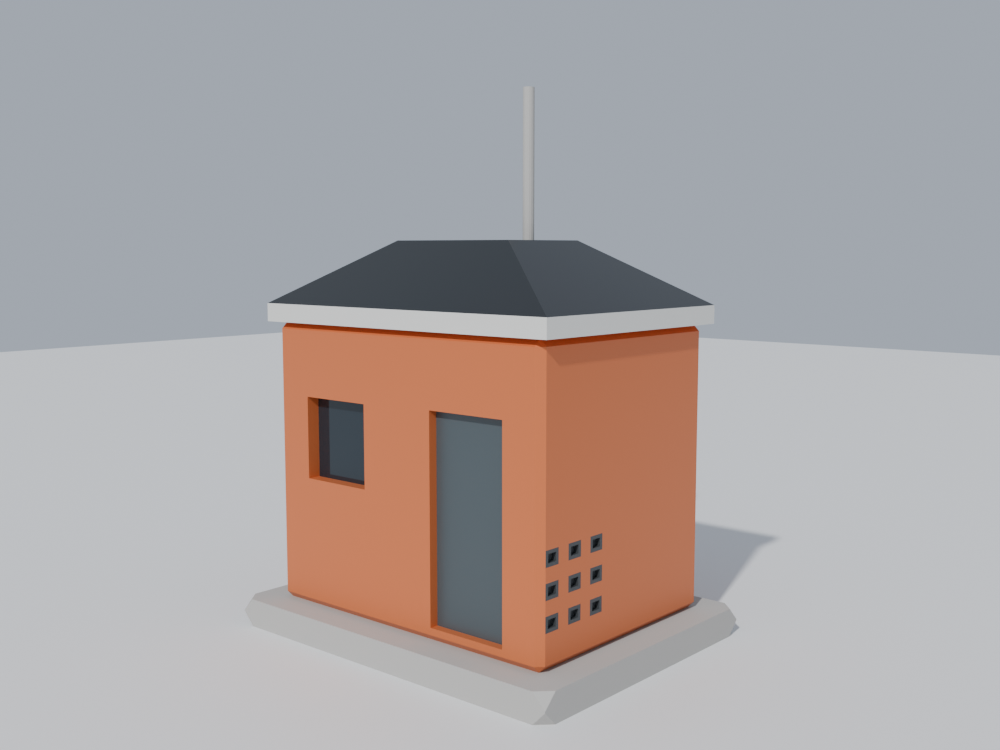
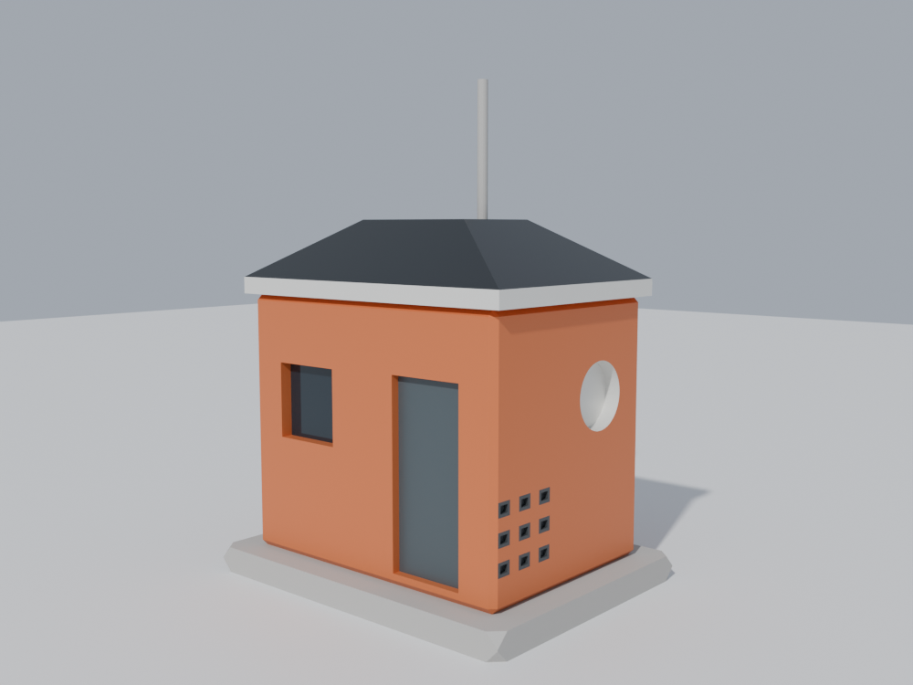
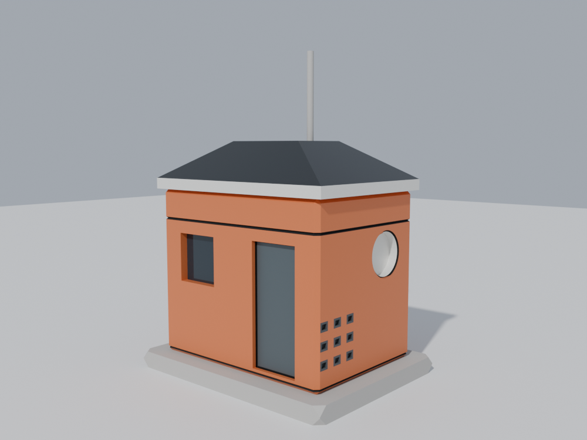

Products › BaseNode Packs › Modeling Tools › Tutorial: The refuge
The refuge
A radio relay hut on a mountain pass: a steel box on a concrete plinth, a window, a door, vents, a hipped roof with a mast, a round hatch, grooves. It starts as a box, and every step is one modelling tool more, in Geometry Nodes.

You will learn
- The craft. Hard-surface modelling without a modifier stack: bevel, chamfer, inset, extrude faces one by one or as regions, cut with a boolean, groove panel lines.
- The idea. Each tool stores what it made as an attribute (the front, the sides, the strips, the cut, the seam) and the next tool takes it as its selection. The material reads the same attributes.
- The .bn. A pipe of tools with
|>, attributes read back as fields withNamedAttribute, and how a step grows: one frame more, and the pipe goes on from where it stopped.
Before you start
You need Blender 5, the Base Node add-on, and the Modeling Tools pack: it carries the three modules this tutorial uses. The steps are free to read and copy; the modules are not, and without the pack a step does not build.
| Module | What it gives | What it stores |
|---|---|---|
poly_bevel | poly_bevel: every edge of a closed mesh bevelled. chamfer_corners: the selected points cut off. | bevel_face, bevel_edge, bevel_corner; chamfer_corner |
poly_extrude | poly_extrude: faces inset, then pushed along their normals, one by one or as regions, turned, tapered. | poly_front, poly_side, poly_layer |
modeling | boolean_cut: a mesh cut by another. panel_lines: a groove along edges. poly_solidify, not used here. | bool_cut, bool_seam; panel_groove |
This page assumes you have read Lunar ground, or know the basics of a .bn file: a graph, its nodes as calls, fields.
Every block below is a complete .bn file, its code beside the nodes it builds. Two ways to try a step:
- Drag it. Drag the file icon of its block, or its title, onto empty space in Blender's 3D Viewport, and keep Instantiate the Example: a new object carries
refugeat the 3D cursor. A click on the file icon downloads the file instead. - Paste it. Press the copy button of its block, open a Geometry Node editor, press Ctrl+Shift+V and pick Add as Modifier, on any mesh object: the graph makes its own refuge and ignores the mesh it is given.
The pictures are rendered from these exact files by render.py.
Tools that leave notes
In a modelling package you select faces by hand, then run a tool on them. Geometry Nodes has no hand: a selection is a field, a rule that says yes or no for each face. Writing that rule is easy for the box (“the faces that look forward”), hard for what a tool just made (“the faces the last extrusion pushed out”).
So each tool of the pack writes it down. poly_extrude marks the faces it pushed out poly_front, and the faces of the walls it raised poly_side.
The next tool reads poly_front back and works on those faces. That is the whole tutorial, seven times.
The notes stay on the mesh until you remove them: a tool adds its own and keeps the ones before.
1. A box on a plinth
Two Cubes. The plinth is a plain slab. The box gets vertices: 13 along X, 9 along Y, 11 along Z, so its faces are 25 cm apart.
A window will be a region of these faces, a vent one face: the grid is where the openings can go.
step1_box.bn: refuge, refuge_paint
|>passes what is on its left as the first input of the call on its right:Cube(…).mesh |> TransformGeometry(…)moves the cube up so it stands on the plinth.refuge_paintis a shader group: its inputs are the knobs you turn, on its node in the material. One colour for now."Box" #blue { … }is a frame: the nodes inside it are boxed together in the editor, under that label. Each step will add one.

2. Edges and corners
Nothing made of steel has a sharp edge. One line, |> poly_bevel(width: 0.06), cuts every edge of the box 6 cm wide; another, |> chamfer_corners(width: 0.12), cuts the eight corners off the plinth.
step2_bevel.bn: refuge, refuge_paint
poly_bevel works face by face: it shrinks each face of the box by width, lays a strip along each edge between two faces, and closes each corner with a patch.
Then it marks them: bevel_face on the faces, bevel_edge on the strips, bevel_corner on the patches.
For this one picture, the material paints the strips and the patches pale, so you can see them. The flat edges between two faces of the grid are bevelled too: they stay flat and you never see them, except here.
What is left orange is bevel_face, the 25 cm faces, smaller now. Step 4 uses them.

poly_bevel, shown pale. The plinth has lost its corners.segmentsis 1 here: a flat chamfer. More segments round the edge, but on a grid like this one the patches where a flat edge meets a rounded one bulge a little; a chamfer stays clean.chamfer_cornersrebuilds every face of its mesh and keeps none of its attributes. That is fine on the plinth, which stores nothing. On a mesh that does, run it first.
3. A window and a door
Two calls to poly_extrude on the front wall. Each insets a region of faces from its border and pushes it in: a negative distance goes into the wall.
step3_openings.bn: refuge, refuge_paint
- The selection.
n.y < -0.99keeps the faces that look forward, along −Y. The bounds onp.xandp.zkeep a rectangle of them. - A region.
individual: falsetakes the selected faces as one piece: the window is 4 × 4 faces with the strips between them, inset 8 cm from the border of the piece, not each face from its own. - The note.
frontreadspoly_front, the faces the extrusion pushed in: the glass.StoreNamedAttributekeeps it asglass. - A clean slate.
RemoveNamedAttributetakes away every note whose name starts withpoly_(pattern_mode: Wildcard). - The door is the same, 4 × 8 faces, and keeps its front as
door.
Why copy poly_front to glass, then remove it? Notes pile up: the door's poly_extrude would keep the window's poly_front and add its own, and door would take the window too.
So keep what you need under your own name, then wipe the tools' notes before the next tool whose notes you read.
The bounds sit between a line of the grid and the middle of a face, for instance p.x > -1.2 for a line at −1.25: the strip on the line stays out, the face next to it is in.
The material reads glass and door with an Attribute node, the shader's way to read what the geometry stored.

4. Vents, one face at a time
On the right wall, nine vents. The same tool, two differences: individual is left on, so each face is inset and pushed on its own; and the selection reads a note from step 2.
step4_vents.bn: refuge, refuge_paint
cellreadsbevel_face. Without it the selection takes the strips and the patches between the faces too, and each becomes a vent of its own.front or side: the vent's back and its four walls, kept aslouvre. The material paints them bare steel. The window and the door are not in it: their notes were removed just before.bevel_facestays, its name does not start withpoly_.

Try: take cell and out of grille. The strips and the patches join in: a grille of 25 vents, small and large.
5. A roof, extrusion after extrusion
Three extrusions of the top, each one on the front of the one before. That is where the notes pay: selection: front means “what the last tool pushed out”.
step5_roof.bn: refuge, refuge_paint
- The soffit. The top, as a region (
n.z > 0.99, and high up, not the sills of the openings).distance: 0.0pushes it nowhere andtaper: 1.1scales it to 110 %: the new sides are flat, a ledge that overhangs the walls. The notes of the openings and the vents are removed first, as in step 3. - The fascia. That front pushed up 16 cm. Its sides are a band round the roof, kept as
fascia. Removingpoly_sidealone before it keeps the soffit's front to push, and leaves out the soffit's sides. - The roof. That front pushed up 55 cm and scaled to 40 %: four slopes and a flat top, kept as
roof, again after removing the sides before it.
The same name, front, gives three different selections. A field is not a value: it is read again by each node that uses it, on the mesh that node is given.
Each poly_extrude gets the mesh of the one before, with that one's poly_front: it pushed the whole front of the one before, so that front is now its own.
The mast is a plain Cylinder, standing in the roof; it joins the plinth for its material.

Try: on the third extrusion, set taper: 0.0 and distance: 1.0: the flat top shrinks to a point, a pyramid.
6. A boolean hatch
A round hatch in the right wall: a cylinder, laid on its side with half of its depth in the wall, taken away from the hut with boolean_cut.
step6_hatch.bn: refuge, refuge_paint
Blender's Mesh Boolean gives back one mesh and the edges where the two met, but not which faces came from the cutter.
boolean_cut does. It marks those faces bool_cut, here the bottom of the hatch and its round wall, and the edges where they meet the hut's own faces bool_seam.
The material reads bool_cut as it is and paints the hatch like the fascia. No copy this time: nothing after it writes bool_cut again.

7. Grooves
Last tool, panel_lines: a groove 4 cm wide and 3 cm deep along the edges it is given. Its selection gathers three notes:
step7_grooves.bn: refuge, refuge_paint
seam, thebool_seamof step 6: a gasket round the hatch.FaceGroupBoundaries(face_group_id: door), the edges between the door, from step 3, and the faces round it: a gap round the door leaf. It readsdooras an integer, 1 on the door and 0 elsewhere, two groups with a border between them.belts: two loops of edges round the walls, 31 cm and 2.31 m above the ground. Each is the bottom edge of a row ofbevel_face, 6 cm above a line of the grid: the first row, and the row over the door and the window. Nothing else lies at those heights.
A groove needs edges that close a panel: a loop, a seam, the border of a region. Where a line stops short, the groove narrows to nothing.
panel_lines marks the walls of each groove panel_groove, and the material paints them almost black.

The knobs
Every tool has its inputs; the material its colours. A few to start with:
| Where | Input | What it does |
|---|---|---|
refuge_paint | paint, door_color, steel, trim | The colours, on the group node in the material. |
refuge_paint | glow | Light behind the glass. 0 by day. |
poly_bevel | width, segments, profile | How wide the bevel, in how many strips, from flat (0) through round (0.5) to square (1). |
poly_extrude | distance, inset, taper | How far each opening goes, how wide its frame, how the roof narrows. |
panel_lines | width, depth | The size of the grooves. |
Try: on step 7, set glow of refuge_paint to 4: someone is in. Then set depth of panel_lines to 0.06: the grooves hold more shadow.
To move an opening, change the bounds of its selection; keep them between a line of the grid and the middle of a face. A finer grid, more vertices on the Cube, lets you place them closer.
Take it to Blender
The finished refuge, in one file. Drag the card onto empty space in Blender's 3D Viewport and keep Instantiate the Example: a new object carries refuge. A click on the card downloads the file.
The steps before it, to start again from any of them:
The files, with the script that renders this page's pictures, are in examples/tutorials/refuge/.